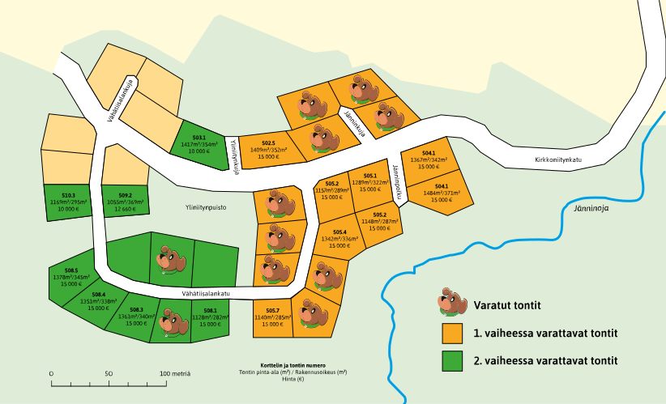
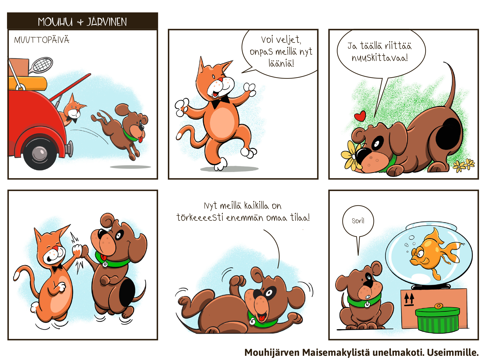

<!DOCTYPE html>
<!-- saved from url=(0061)https://xn-%2Dmouhijrvenmaisemakylt-b2bo.fi/tietoa-tonteista/ -->
<html lang="fi" dir="ltr"><head><meta http-equiv="Content-Type" content="text/html; charset=UTF-8"><meta name="viewport" content="width=device-width, initial-scale=1">

<meta http-equiv="X-UA-Compatible" content="IE=edge">
<meta name="viewport" content="width=device-width, initial-scale=1">
<title>Mouhijärven Maisemakylien tontit | Mouhijärven maisemakylät</title>


<meta name="description" content="Mouhijärven Maisemakylät on idyllinen asuinympäristö, joka tarjoaa kaiken mitä tarvitset sujuvaan ja mieluisaan elämään. Tutustu tarkemmin!">

<script type="text/javascript" async="" src="./index_files/analytics.js.download"></script><script type="application/ld+json" class="aioseop-schema">{"@context":"https://schema.org","@graph":[{"@type":"Organization","@id":"https://xn--mouhijrvenmaisemakylt-b2bo.fi/#organization","url":"https://xn--mouhijrvenmaisemakylt-b2bo.fi/","name":"Mouhijärven maisemakylät","sameAs":[]},{"@type":"WebSite","@id":"https://xn--mouhijrvenmaisemakylt-b2bo.fi/#website","url":"https://xn--mouhijrvenmaisemakylt-b2bo.fi/","name":"Mouhijärven maisemakylät","publisher":{"@id":"https://xn--mouhijrvenmaisemakylt-b2bo.fi/#organization"}},{"@type":"WebPage","@id":"https://xn--mouhijrvenmaisemakylt-b2bo.fi/tietoa-tonteista/#webpage","url":"https://xn--mouhijrvenmaisemakylt-b2bo.fi/tietoa-tonteista/","inLanguage":"fi","name":"Tietoa tonteista","isPartOf":{"@id":"https://xn--mouhijrvenmaisemakylt-b2bo.fi/#website"},"breadcrumb":{"@id":"https://xn--mouhijrvenmaisemakylt-b2bo.fi/tietoa-tonteista/#breadcrumblist"},"description":"Mouhijärven Maisemakylät on idyllinen asuinympäristö, joka tarjoaa kaiken mitä tarvitset sujuvaan ja mieluisaan elämään. Tutustu tarkemmin!","datePublished":"2019-04-11T14:56:18+03:00","dateModified":"2020-09-30T16:19:31+03:00"},{"@type":"BreadcrumbList","@id":"https://xn--mouhijrvenmaisemakylt-b2bo.fi/tietoa-tonteista/#breadcrumblist","itemListElement":[{"@type":"ListItem","position":1,"item":{"@type":"WebPage","@id":"https://xn--mouhijrvenmaisemakylt-b2bo.fi/","url":"https://xn--mouhijrvenmaisemakylt-b2bo.fi/","name":"Mouhijärven maisemakylät | Aktiivista kyläelämää luonnon keskellä"}},{"@type":"ListItem","position":2,"item":{"@type":"WebPage","@id":"https://xn--mouhijrvenmaisemakylt-b2bo.fi/tietoa-tonteista/","url":"https://xn--mouhijrvenmaisemakylt-b2bo.fi/tietoa-tonteista/","name":"Tietoa tonteista"}}]}]}</script>
<link rel="canonical" href="https://xn--mouhijrvenmaisemakylt-b2bo.fi/tietoa-tonteista/">
<meta property="og:type" content="article">
<meta property="og:title" content="Mouhijärven Maisemakylien tontit | Mouhijärven maisemakylät">
<meta property="og:description" content="Mouhijärven Maisemakylät on idyllinen asuinympäristö, joka tarjoaa kaiken mitä tarvitset sujuvaan ja mieluisaan elämään. Tutustu tarkemmin!">
<meta property="og:url" content="https://xn--mouhijrvenmaisemakylt-b2bo.fi/tietoa-tonteista/">
<meta property="og:site_name" content="Mouhijärven maisemakylät">
<meta property="og:image" content="https://xn--mouhijrvenmaisemakylt-b2bo.fi/wp-content/uploads/2019/04/mouhijarven-maisemakylat-og.jpg">
<meta property="article:published_time" content="2019-04-11T14:56:18Z">
<meta property="article:modified_time" content="2020-09-30T16:19:31Z">
<meta property="og:image:secure_url" content="https://xn--mouhijrvenmaisemakylt-b2bo.fi/wp-content/uploads/2019/04/mouhijarven-maisemakylat-og.jpg">
<meta name="twitter:card" content="summary">
<meta name="twitter:title" content="Mouhijärven Maisemakylien tontit | Mouhijärven maisemakylät">
<meta name="twitter:description" content="Mouhijärven Maisemakylät on idyllinen asuinympäristö, joka tarjoaa kaiken mitä tarvitset sujuvaan ja mieluisaan elämään. Tutustu tarkemmin!">
<meta name="twitter:image" content="https://xn--mouhijrvenmaisemakylt-b2bo.fi/wp-content/uploads/2019/04/mouhijarven-maisemakylat-og.jpg">

<link rel="dns-prefetch" href="https://fonts.googleapis.com/">
<link rel="alternate" type="application/rss+xml" title="Mouhijärven maisemakylät » syöte" href="https://xn--mouhijrvenmaisemakylt-b2bo.fi/feed/">
<link rel="alternate" type="application/rss+xml" title="Mouhijärven maisemakylät » kommenttien syöte" href="https://xn--mouhijrvenmaisemakylt-b2bo.fi/comments/feed/">
<link rel="stylesheet" id="sb_instagram_styles-css" href="./index_files/sb-instagram.min.css" type="text/css" media="all">
<link rel="stylesheet" id="wp-block-library-css" href="./index_files/style.min.css" type="text/css" media="all">
<link rel="stylesheet" id="siteorigin-panels-front-css" href="./index_files/front-flex.min.css" type="text/css" media="all">
<link rel="stylesheet" id="sow-image-default-7877d6771435-css" href="./index_files/sow-image-default-7877d6771435.css" type="text/css" media="all">
<link rel="stylesheet" id="iw-defaults-css" href="./index_files/defaults.css" type="text/css" media="all">
<link rel="stylesheet" id="wpa-style-css" href="./index_files/wpa-style.css" type="text/css" media="all">
<link rel="stylesheet" id="bootstrap-style-css" href="./index_files/bootstrap.min.css" type="text/css" media="all">
<link rel="stylesheet" id="fontawesome-style-css" href="./index_files/all.min.css" type="text/css" media="all">
<link rel="stylesheet" id="webfonts-google-css" href="./index_files/css" type="text/css" media="all">
<link rel="stylesheet" id="main-style-css" href="./index_files/styles.css" type="text/css" media="all">
<link rel="stylesheet" id="maisemakylat-style-css" href="./index_files/style.css" type="text/css" media="all">
<script type="text/javascript" src="./index_files/jquery.js.download"></script>
<script type="text/javascript" src="./index_files/jquery-migrate.min.js.download"></script>
<script type="text/javascript" src="./index_files/equal-height-columns-public.js.download"></script>
<!--[if lt IE 9]>
<script type='text/javascript' src='https://xn--mouhijrvenmaisemakylt-b2bo.fi/wp-content/themes/mouhijarven-maisemakylat/js/respond.min.js?ver=1.4.2'></script>
<![endif]-->
<!--[if lte IE 9]>
<script type='text/javascript' src='https://xn--mouhijrvenmaisemakylt-b2bo.fi/wp-content/themes/mouhijarven-maisemakylat/js/html5shiv.min.js?ver=3.7.3'></script>
<![endif]-->
<link rel="https://api.w.org/" href="https://xn--mouhijrvenmaisemakylt-b2bo.fi/wp-json/">
<link rel="EditURI" type="application/rsd+xml" title="RSD" href="https://xn--mouhijrvenmaisemakylt-b2bo.fi/xmlrpc.php?rsd">
<link rel="wlwmanifest" type="application/wlwmanifest+xml" href="https://xn--mouhijrvenmaisemakylt-b2bo.fi/wp-includes/wlwmanifest.xml"> 
<meta name="generator" content="WordPress 5.3.4">
<link rel="shortlink" href="https://xn--mouhijrvenmaisemakylt-b2bo.fi/?p=74">
<link rel="alternate" type="application/json+oembed" href="https://xn--mouhijrvenmaisemakylt-b2bo.fi/wp-json/oembed/1.0/embed?url=https%3A%2F%2Fxn--mouhijrvenmaisemakylt-b2bo.fi%2Ftietoa-tonteista%2F">
<link rel="alternate" type="text/xml+oembed" href="https://xn--mouhijrvenmaisemakylt-b2bo.fi/wp-json/oembed/1.0/embed?url=https%3A%2F%2Fxn--mouhijrvenmaisemakylt-b2bo.fi%2Ftietoa-tonteista%2F&amp;format=xml">
                <style type="text/css" media="all" id="siteorigin-panels-layouts-head">/* Layout 74 */ #pgc-74-0-0 , #pgc-74-1-0 , #pgc-74-2-0 , #pgc-74-3-0 , #pgc-74-4-0 , #pgc-74-5-0 { width:100%;width:calc(100% - ( 0 * 30px ) ) } #pg-74-0 , #pg-74-1 , #pg-74-2 , #pg-74-3 , #pg-74-4 , #pl-74 .so-panel:last-child { margin-bottom:0px } #pl-74 .so-panel { margin-bottom:30px } #pg-74-0> .panel-row-style { padding:0px 0px 0px 0px;margin-bottom:0!important } #pg-74-0.panel-no-style, #pg-74-0.panel-has-style > .panel-row-style , #pg-74-1.panel-no-style, #pg-74-1.panel-has-style > .panel-row-style , #pg-74-2.panel-no-style, #pg-74-2.panel-has-style > .panel-row-style , #pg-74-3.panel-no-style, #pg-74-3.panel-has-style > .panel-row-style , #pg-74-4.panel-no-style, #pg-74-4.panel-has-style > .panel-row-style , #pg-74-5.panel-no-style, #pg-74-5.panel-has-style > .panel-row-style { -webkit-align-items:flex-start;align-items:flex-start } #pgc-74-0-0> .panel-cell-style , #panel-74-0-0-0> .panel-widget-style { margin-bottom:0!important } #pgc-74-0-0 { align-self:auto } #pg-74-1> .panel-row-style , #panel-74-2-0-0> .panel-widget-style , #panel-74-4-0-0> .panel-widget-style { padding:3em 0em 3em 0em } #pg-74-3> .panel-row-style { background-image:url(https://xn--mouhijrvenmaisemakylt-b2bo.fi/wp-content/uploads/2019/04/Mouhijarven-Maisemakylat-rasteritausta.jpg);background-repeat:repeat;padding:3em 0em 3em 0em } #pg-74-5> .panel-row-style { padding:8em 0em 4em 0em } @media (max-width:780px){ #pg-74-0.panel-no-style, #pg-74-0.panel-has-style > .panel-row-style , #pg-74-1.panel-no-style, #pg-74-1.panel-has-style > .panel-row-style , #pg-74-2.panel-no-style, #pg-74-2.panel-has-style > .panel-row-style , #pg-74-3.panel-no-style, #pg-74-3.panel-has-style > .panel-row-style , #pg-74-4.panel-no-style, #pg-74-4.panel-has-style > .panel-row-style , #pg-74-5.panel-no-style, #pg-74-5.panel-has-style > .panel-row-style { -webkit-flex-direction:column;-ms-flex-direction:column;flex-direction:column } #pg-74-0 > .panel-grid-cell , #pg-74-0 > .panel-row-style > .panel-grid-cell , #pg-74-1 > .panel-grid-cell , #pg-74-1 > .panel-row-style > .panel-grid-cell , #pg-74-2 > .panel-grid-cell , #pg-74-2 > .panel-row-style > .panel-grid-cell , #pg-74-3 > .panel-grid-cell , #pg-74-3 > .panel-row-style > .panel-grid-cell , #pg-74-4 > .panel-grid-cell , #pg-74-4 > .panel-row-style > .panel-grid-cell , #pg-74-5 > .panel-grid-cell , #pg-74-5 > .panel-row-style > .panel-grid-cell { width:100%;margin-right:0 } #pg-74-1 , #pg-74-2 , #pg-74-3 , #pg-74-4 , #pg-74-5 { margin-bottom:px } #pl-74 .panel-grid-cell { padding:0 } #pl-74 .panel-grid .panel-grid-cell-empty { display:none } #pl-74 .panel-grid .panel-grid-cell-mobile-last { margin-bottom:0px } #pg-74-0> .panel-row-style { margin-bottom:0!important } #pg-74-1> .panel-row-style , #panel-74-2-0-0> .panel-widget-style , #pg-74-3> .panel-row-style , #panel-74-4-0-0> .panel-widget-style { padding:3em 0em 3em 0em } #pg-74-5> .panel-row-style { padding:5em 0em 5em 0em }  } </style>
<script async="" src="./index_files/js"></script>
<script>
  window.dataLayer = window.dataLayer || [];
  function gtag(){dataLayer.push(arguments);}
  gtag('js', new Date());
  gtag('config', 'UA-138213448-1');
</script>
</head>
<body class="content-page">
<nav id="skip" aria-label="Sivun sisäisten oikoteiden valikko" class="sr-only"><a href="https://xn--mouhijrvenmaisemakylt-b2bo.fi/tietoa-tonteista/#paavalikko">Siirry päävalikkoon</a><a href="https://xn--mouhijrvenmaisemakylt-b2bo.fi/tietoa-tonteista/#maincontent">Siirry pääsisältöön</a><a href="https://xn--mouhijrvenmaisemakylt-b2bo.fi/tietoa-tonteista/#footer">Siirry alatunnisteeseen</a></nav>
	<header class="container-fluid green-bg">
  		<div class="container" style="position: relative;">
	  			<div class="row" style=" position: relative;z-index: 1;">
  				<div class="col-sm-12 text-center position-relative"><div class="header-logo"></div></div>
  				 </div>	<div class="row" style=" position: relative;z-index: 1;"><div class="col-sm-12" id="paavalikko"><div class="menu-paavalikko-container"><ul id="menu-paavalikko" class="menu menu-hidden"><li id="menu-item-8" class="menu-item menu-item-type-post_type menu-item-object-page menu-item-home menu-item-8"><a href="https://xn--mouhijrvenmaisemakylt-b2bo.fi/">Etusivu</a></li>
<li id="menu-item-80" class="menu-item menu-item-type-post_type menu-item-object-page current-menu-item page_item page-item-74 current_page_item menu-item-80"><a href="https://xn--mouhijrvenmaisemakylt-b2bo.fi/tietoa-tonteista/" aria-current="page">Tietoa tonteista</a></li>
<li id="menu-item-138" class="menu-item menu-item-type-post_type menu-item-object-page menu-item-138"><a href="https://xn--mouhijrvenmaisemakylt-b2bo.fi/usein-kysyttya/">Usein kysyttyä</a></li>
<li id="menu-item-139" class="menu-item menu-item-type-post_type menu-item-object-page menu-item-139"><a href="https://xn--mouhijrvenmaisemakylt-b2bo.fi/yhteystiedot/">Yhteystiedot</a></li>
</ul></div></div></div>	  		</div>
	</header>
	<main class="container-fluid white-bg" role="main" id="maincontent">
  		<div class="container">
  		<div class="row">
  			<div class="col-sm-12">
			<div id="pl-74" class="panel-layout"><div id="pg-74-0" class="panel-grid panel-has-style"><div class="topborder mb-0 siteorigin-panels-stretch panel-row-style panel-row-style-for-74-0" id="paakuvanew" data-stretch-type="full-stretched" style="margin-left: -204.6px; margin-right: -204.4px; padding-left: 0px; padding-right: 0px; border-left: 0px; border-right: 0px;"><div id="pgc-74-0-0" class="panel-grid-cell" style="padding-left: 0px; padding-right: 0px;"><div class="mb-0 panel-cell-style panel-cell-style-for-74-0-0"><div id="panel-74-0-0-0" class="so-panel widget widget_sow-image panel-first-child panel-last-child" data-index="0"><div class="mb-0 panel-widget-style panel-widget-style-for-74-0-0-0"><div class="so-widget-sow-image so-widget-sow-image-default-7877d6771435">

<div class="sow-image-container">
	
</div>

</div></div></div></div></div></div></div><div id="pg-74-1" class="panel-grid panel-has-style"><div class="green-to-white-bg siteorigin-panels-stretch panel-row-style panel-row-style-for-74-1" data-stretch-type="full" style="margin-left: -204.6px; margin-right: -204.4px; padding-left: 204.6px; padding-right: 204.4px; border-left: 0px; border-right: 0px;"><div id="pgc-74-1-0" class="panel-grid-cell"><div id="panel-74-1-0-0" class="so-panel widget widget_sow-editor panel-first-child panel-last-child" data-index="1"><div class="max1110 panel-widget-style panel-widget-style-for-74-1-0-0"><div class="so-widget-sow-editor so-widget-sow-editor-base">
<div class="siteorigin-widget-tinymce textwidget">
	<h1 class="h2 signpainter-font mrgb05" style="text-align: center;"><span style="color: #ffffff;">Mouhijärven Maisemakylien tontit</span></h1>
<h2 style="text-align: center;margin-top: -1em;margin-bottom: 2em;" class="h3">Toisen vaiheen tontit varattavissa 27.4.2020 alkaen</h2>
<p></p>
<h3 style="text-align: center;margin-top: 2em;" class="h4"><a href="https://sastamala.maps.arcgis.com/apps/webappviewer/index.html?id=0b946d0926ef4e818a8dc2727dcb7f24" target="_blank" style="color:#000000;" rel="noopener noreferrer"><span style="text-decoration:underline;">Karttapalvelustamme</span> näet tontin tarkemmat tiedot, varaussäännöt ja pääset tekemään varauksen!</a></h3>
</div>
</div></div></div></div></div></div><div id="pg-74-2" class="panel-grid panel-has-style"><div class="kavennettu white-bg panel-row-style panel-row-style-for-74-2"><div id="pgc-74-2-0" class="panel-grid-cell"><div id="panel-74-2-0-0" class="so-panel widget widget_sow-editor panel-first-child panel-last-child" data-index="2"><div class="kavennettu maxw800 panel-widget-style panel-widget-style-for-74-2-0-0"><div class="so-widget-sow-editor so-widget-sow-editor-base">
<div class="siteorigin-widget-tinymce textwidget">
	<h2 class="green-text" style="text-align: center;">Monien mahdollisuuksien Maisemakylät</h2>
<h3 class="h4">Mouhijärven Maisemakylät on idyllinen asuinympäristö, joka tarjoaa kaiken mitä tarvitset sujuvaan ja mieluisaan elämään.</h3>
<p>Vähä-Tiisalan alueella sijaitsevat Mouhijärven Maisemakylien tontit ovat avaria ja merkittävästi halvempia kuin lähikaupungeissa. Kun tonttiin ei tarvitse tuhlata suuria summia, rahaa jää enemmän käytettäväksi itse taloon tai muuhun elämänmenoon. Huomattavan huokealla tonttihinnalla saat kuitenkin asuinympäristön, jossa on kaikki tarvittavat palvelut, upea luonto ja laaja valikoima harrastustoimintaa.</p>
<p>Elämä kyläyhteisössä on helppoa, sillä kaupat, koulut, päiväkodit ja muut palvelut sijaitsevat kätevän matkan päässä. Lähikaupunkeihin pääsee nopeasti – ajomatka Tampereelle on puolisen tuntia, Nokialle hurauttaa parissakymmenessä minuutissa eikä Poriinkaan ole kuin tunnin ajo. Työmatkat siis taittuvat sukkelasti, vaikka työpaikka sijaitsisi toisaalla. Asuinalueelle rakennetaan nopea valokuituyhteys, joten etäpäivätkin sujuvat näissä maisemissa mainiosti. Myös Sastamalassa on paljon työpaikkoja – kunnan työllisyysaste on yksi maan parhaista.</p>
<p style="text-align: center;"><a class="btn oranssi-btn" href="https://www.xn--mouhijrvenmaisemakylt-b2bo.fi/yhteystiedot/">OTA YHTEYTTÄ</a></p>
</div>
</div></div></div></div></div></div><div id="pg-74-3" class="panel-grid panel-has-style"><div class="topborder taustakuva siteorigin-panels-stretch panel-row-style panel-row-style-for-74-3" data-stretch-type="full-stretched" style="margin-left: -204.6px; margin-right: -204.4px; padding-left: 0px; padding-right: 0px; border-left: 0px; border-right: 0px;"><div id="pgc-74-3-0" class="panel-grid-cell" style="padding-left: 0px; padding-right: 0px;"><div id="panel-74-3-0-0" class="so-panel widget widget_sow-image panel-first-child" data-index="3"><div class="max1110 panel-widget-style panel-widget-style-for-74-3-0-0" id="sarjakuva-muuttopaiva"><div class="so-widget-sow-image so-widget-sow-image-default-7877d6771435">

<div class="sow-image-container">
	
</div>

</div></div></div><div id="panel-74-3-0-1" class="widget_text so-panel widget widget_custom_html panel-last-child" data-index="4"><div class="widget_text sr-only panel-widget-style panel-widget-style-for-74-3-0-1" id="sarjakuva_muuttopaiva_kuvausteksti" role="presentation"><div class="textwidget custom-html-widget">Mouhu + Järvinen -sarjakuva
Ruutu 1: On muuttopäivä, kissa ja koira hyppäävät ulos täyteen lastatusta autosta uudessa kodissa.
Ruutu 2: Kissa tanssahtelee ja toteaa iloisesti: “Voi veljet, onpas meillä nyt lääniä!”
Ruutu 3: Koira möyrii kukkien keskellä ja jatkaa: “Ja täällä riittää nuuskittavaa!”
Ruutu 4: Kissa ja koira heittävät tohkeissaan ylävitoset.
Ruutu 5: Koira piehtaroi maassa selällään ja sanoo: “Nyt meillä kaikilla on törkeeeesti enemmän omaa tilaa!”
Ruutu 6: Koira vilkaisee muuttolaatikon päällä pienessä akvaariossa mulkoilevaa äkäistä kultakalaa ja sanoo anteeksipyytävästi: “Sori!”
Sarjakuva päättyy sanoihin: Mouhijärven Maisemakylistä unelmakoti. Useimmille.</div></div></div></div></div></div><div id="pg-74-4" class="panel-grid panel-has-style"><div class="kavennettu white-bg panel-row-style panel-row-style-for-74-4"><div id="pgc-74-4-0" class="panel-grid-cell"><div id="panel-74-4-0-0" class="so-panel widget widget_sow-editor panel-first-child panel-last-child" data-index="5"><div class="kavennettu maxw800 panel-widget-style panel-widget-style-for-74-4-0-0"><div class="so-widget-sow-editor so-widget-sow-editor-base">
<div class="siteorigin-widget-tinymce textwidget">
	<h2 class="green-text" style="text-align: center;">Tilaa ajatuksille ja aikaa elämälle</h2>
<p>Mouhijärven rauhallisessa ja kauniissa miljöössä voit elää niin aktiivista elämää kuin itse tahdot. Ympäristö tarjoaa monenlaisia mahdollisuuksia nauttia kiehtovasta luonnosta. Aivan maisemakylien vieressä virtaava Saikkalanjoki on suosittu melontaväylä, kun taas Otamuksen ja Ritajärven alueet lumoavat retkeilijän luontoreiteillään.</p>
<p>Myös alueen urheilutoiminta on vilkasta – joukkuelajeista harrastetaan ainakin jalkapalloa, pesäpalloa ja lentopalloa. Lisäksi Sastamalan opisto järjestää monipuolisia kursseja myös Mouhijärvellä. Etenkin perheen pienimmät saattavat ilahtua kävely- tai pyöräilymatkan päässä sijaitsevasta Kiviniityn kotieläinpuistosta.</p>
<p>Sastamalassa on lisäksi paljon kulttuuritoimintaa sekä pieniä erikoisliikkeitä, mikä tekee kunnasta elinvoimaisen asuinpaikan. Voit varata tonttisi luonnonkauniista maisemasta nyt!</p>
</div>
</div></div></div></div></div></div><div id="pg-74-5" class="panel-grid panel-has-style"><div class="topborder yellow-bg text-bigger siteorigin-panels-stretch panel-row-style panel-row-style-for-74-5" data-stretch-type="full-stretched" style="margin-left: -204.6px; margin-right: -204.4px; padding-left: 0px; padding-right: 0px; border-left: 0px; border-right: 0px;"><div id="pgc-74-5-0" class="panel-grid-cell" style="padding-left: 0px; padding-right: 0px;"><div id="panel-74-5-0-0" class="so-panel widget widget_sow-editor panel-first-child" data-index="6"><div class="so-widget-sow-editor so-widget-sow-editor-base">
<div class="siteorigin-widget-tinymce textwidget">
	<h2 style="text-align: center;"><span class="mrgb1 dropShad" style="color: #ffffff;">TONTTIMYYNNIN YHTEYSTIEDOT</span></h2>
<h3 class="signpainter-font mrgb1" style="text-align: center;">Ollaan yhteyksissä!</h3>
<h4 style="text-align: center;">Arto Vuorijärvi</h4>
<p style="text-align: center;">050 330 1441<br>
<span style="color: #000000;"><a style="color: #000000;" href="mailto:arto.vuorijarvi@sastamala.fi">arto.vuorijarvi@sastamala.fi</a></span></p>
</div>
</div></div><div id="panel-74-5-0-1" class="so-panel widget widget_sow-image panel-last-child" data-index="7"><div class="kavennettu maxw500 panel-widget-style panel-widget-style-for-74-5-0-1"><div class="so-widget-sow-image so-widget-sow-image-default-7877d6771435">

<div class="sow-image-container">
	
</div>

</div></div></div></div></div></div></div>			</div>
		</div>
  		</div>
	</main>

<footer class="container-fluid footer green-bg topborder" id="footer">
  		<div class="container">
  			<div class="row">
  				<div class="col-sm-12">
  				<div class="footer-content">
  				<div class="footer-logo"></div>  				</div>
  				</div>
			</div>
  		</div>
</footer>


<script type="text/javascript">
var sbiajaxurl = "https://xn--mouhijrvenmaisemakylt-b2bo.fi/wp-admin/admin-ajax.php";

</script>
<script type="text/javascript">var wpalabels = {"s":"Search","author":"Name","email":"Email","url":"Website","comment":"Comment"};</script>
<script type="text/javascript" src="./index_files/wpa.labels.js.download"></script>
<script type="text/javascript" src="./index_files/longdesc.button.js.download"></script>
<script type="text/javascript" src="./index_files/current-menu-item.js.download"></script>
<script type="text/javascript" src="./index_files/popper.min.js.download"></script>
<script type="text/javascript" src="./index_files/bootstrap.min.js.download"></script>
<script type="text/javascript" src="./index_files/koodit.js.download"></script>
<script type="text/javascript" src="./index_files/wp-embed.min.js.download"></script>
<script type="text/javascript">var panelsStyles = {"fullContainer":"body"};</script>
<script type="text/javascript" src="./index_files/styling.min.js.download"></script>

<script type="text/javascript">
//<![CDATA[
(function( $ ) { 'use strict';
	
	
	$('html').attr( 'lang','fi' ); $('html').attr( 'dir','ltr' )
	$('input,a,select,textarea,button').removeAttr('tabindex');
	
}(jQuery));
//]]>
</script>
</body></html>